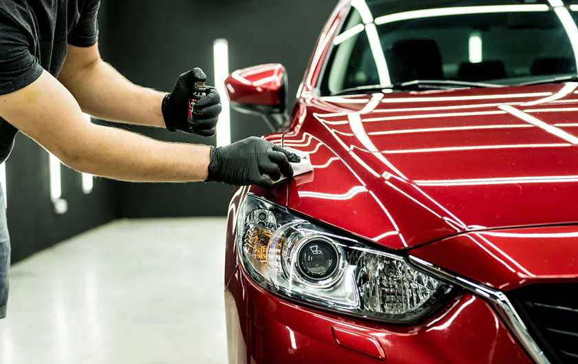

Глубина цвета и блеск
Обработанная поверхность выглядит более выразительно. Особенно заметен эффект на чистом, подготовленном лакокрасочном покрытии.
Блеск, гидрофобный эффект и более простой повседневный уход за автомобилем.

Керамический состав формирует на поверхности кузова дополнительный тонкий слой, который подчёркивает глубину цвета и придаёт лаку выразительный блеск. Благодаря гидрофобному эффекту вода легче скатывается с поверхности, а повседневные загрязнения проще удалять при мойке.
В BARIBAL подбираем технологию с учётом состояния лакокрасочного покрытия, особенностей автомобиля и задач владельца. Один из используемых вариантов — профессиональные керамические составы Gyeon. По запросу можно обсудить альтернативное покрытие другого бренда и заранее согласовать конкретный состав.
Лакокрасочное покрытие постоянно контактирует с водой, дорожной пылью, следами насекомых, реагентами и загрязнениями с дороги. Керамическая обработка помогает сделать поверхность более гладкой на ощупь, добавить выраженный гидрофобный эффект и облегчить регулярный уход.
Результат зависит не только от выбранного состава. Большое значение имеют исходное состояние лака, подготовка кузова, корректное нанесение и дальнейший уход. Поэтому перед работой мы оцениваем автомобиль и согласуем ожидаемый результат, технологию и стоимость.
Керамический состав подчёркивает глубину цвета и ухоженный вид лакокрасочного покрытия.
Вода собирается в капли и легче скатывается с обработанной поверхности.
Повседневные загрязнения проще смывать при правильной регулярной мойке.
Керамика дополняет уход за кузовом и помогает дольше поддерживать его аккуратный внешний вид. Эффект зависит от конкретного состава, подготовки поверхности и условий эксплуатации.
Обработанная поверхность выглядит более выразительно. Особенно заметен эффект на чистом, подготовленном лакокрасочном покрытии.
Гидрофобные свойства помогают воде собираться в капли и быстрее сходить с кузова, уменьшая задержку влаги на поверхности.
Грязь и дорожная плёнка меньше удерживаются на поверхности, поэтому повседневная очистка может требовать меньше усилий.
Состав создаёт дополнительный барьер от части повседневных загрязнений и внешних воздействий в пределах свойств конкретного продукта.
Керамику можно рассматривать после мойки и необходимой подготовки кузова, в том числе после согласованной полировки.
Тип состава и объём подготовки подбираются с учётом состояния лакокрасочного покрытия и пожеланий владельца.
Керамическое покрытие не заменяет антигравийную полиуретановую плёнку и не предназначено для защиты от сколов камнями. Возможности и ограничения конкретного состава обсуждаем до начала работ.
Сейчас один из используемых вариантов — профессиональные керамические составы Gyeon.
Сначала подбираем решение под автомобиль и пожелания владельца — затем согласуем конкретный состав и технологию нанесения.
Керамический состав не скрывает дефекты лака и не заменяет восстановление повреждённой поверхности. Чтобы покрытие легло корректно, важно оценить кузов и выполнить необходимую подготовку.
Оцениваем наличие потёртостей, следов моек, окисления и других дефектов, которые влияют на внешний вид кузова.
Перед нанесением удаляем обычные загрязнения, чтобы подготовить поверхность к дальнейшим операциям.
При необходимости обсуждаем удаление въевшихся частиц и дорожных отложений специальными методами.
Если на лаке есть дефекты, требующие коррекции, объём полировки и её стоимость согласуются отдельно.
Перед покрытием поверхность подготавливается в соответствии с требованиями выбранного состава.
Учитываем, как часто автомобиль используется, где хранится и какой уход владелец готов поддерживать.
Точный порядок зависит от выбранного продукта и состояния автомобиля. Основные этапы согласуем до начала работ.
Оцениваем состояние кузова, обсуждаем желаемый эффект, подходящий тип покрытия и возможные дополнительные работы.
Тщательно очищаем кузов от обычных и стойких загрязнений, которые могут помешать подготовке поверхности.
При необходимости выполняем согласованную полировку. Затем поверхность подготавливается под выбранный керамический состав.
Наносим выбранное покрытие с соблюдением технологии производителя и условий, необходимых для корректной работы состава.
Соблюдаем предусмотренные для конкретного продукта условия выдержки, проверяем обработанную поверхность и сообщаем рекомендации по дальнейшему уходу.
Керамическое покрытие помогает поддерживать внешний вид кузова и облегчает уход, но не делает лакокрасочное покрытие неуязвимым. Оно не предназначено для защиты от ударов камней и крупных сколов — для таких задач применяют полиуретановую антигравийную плёнку.
Керамика также не исключает появления царапин, потёртостей и следов неправильной мойки. Реальные свойства, срок службы и требования к уходу зависят от конкретного продукта, подготовки кузова и условий эксплуатации.
Если нужен другой бренд или определённая серия покрытия, сообщите об этом при обращении. Обсудим возможность применения, характеристики конкретного состава и условия работы до согласования заказа.
от 30 000 ₽
Это начальная стоимость нанесения керамического покрытия. Итоговая цена зависит от размера и состояния автомобиля, объёма подготовки, необходимости полировки и выбранного керамического состава.
После осмотра или предварительной консультации согласуем вариант покрытия, перечень работ и итоговую стоимость до начала нанесения.
Можно начать с консультации и фотографий кузова при хорошем освещении.
Это специальный состав, который после нанесения и отверждения формирует на лакокрасочном покрытии тонкий функциональный слой. Он может усиливать блеск, придавать поверхности гидрофобные свойства и облегчать регулярный уход.
Керамика не предназначена для защиты от сколов камнями и не предотвращает любые царапины. Для защиты наиболее уязвимых элементов кузова от механических воздействий используют полиуретановую антигравийную плёнку.
Gyeon — один из вариантов профессиональных керамических составов, с которыми работает BARIBAL. Конкретный продукт подбирается с учётом состояния кузова и пожеланий владельца.
Да, по запросу можно обсудить альтернативный бренд или состав. Возможность применения, характеристики продукта и условия нанесения согласуем заранее.
Это зависит от состояния лака и желаемого результата. Если на поверхности есть заметные дефекты, может потребоваться предварительная полировка. Её объём и стоимость обсуждаются после осмотра.
Единого срока для всех составов нет. Он зависит от конкретного продукта, подготовки поверхности, пробега, условий хранения, частоты моек и соблюдения рекомендаций по уходу. Сроки и условия конкретного покрытия уточняются до начала работ.
После нанесения важно соблюдать рекомендации для выбранного состава, включая условия первой мойки и последующего ухода. При выдаче автомобиля расскажем, какие правила подходят именно для использованного покрытия.
Да, после осмотра и необходимой подготовки. Даже новый автомобиль может иметь транспортные загрязнения или небольшие дефекты поверхности, поэтому сначала оцениваем состояние лака.
Да, эти технологии могут дополнять друг друга. Плёнкой защищают выбранные элементы от механических воздействий, а керамический состав используют для ухода и защиты совместимых поверхностей. Порядок и зоны обработки согласуются отдельно.
Расскажите, какой автомобиль хотите обработать и какой результат ожидаете. Обсудим Gyeon или альтернативный состав, оценим состояние кузова и предложим подходящий вариант.